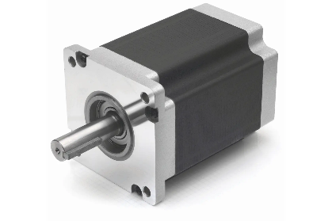

连续转 → 间歇动 Intermittent Motion
电机擅长连续旋转，任务却常要"动—停—动"：转 45° 停一下、推一格停一下。 两条实现路线：机械锁合——把停歇节奏刻进几何（槽轮 / 棘轮 / 不完全齿轮，一个电机搞定、节奏出厂即定、断电也不乱步）； 数字控制——电机说停就停（步进 / 闭环，节奏由代码实时决定）。 本页先用一张对比表把四条路线的分度精度、动停比可调性与成本摆在一起，再逐个拆开几何、公式与制作公差。
本页方案横向对比 四条"停"的路线：三条机械锁合 + 一条数字控制
| 维度 | 槽轮 | 棘轮 | 不完全齿轮 | 步进 · 数字控制 |
|---|---|---|---|---|
| 分度精度 | 几何锁定，最准（误差不累积） | 中等（爪与齿面间隙晃动） | 几何锁定，准 | 良好——但掉步无告警 |
| 动停比可调性 | 定死：=(n−2)/(n+2)，由槽数决定 | 可微调（改摆角 / 棘爪数） | 较自由（留齿弧长任意设计） | 任意可调（改代码即换节奏） |
| 高速性能 | 入槽零冲击，设计好可中速 | 差（爪敲齿硬冲击） | 差（首齿啮入速度突跳） | 好（受矩频曲线限制） |
| 噪音与冲击 | 最安静（ω₂ 从 0 连续起步） | 咔哒声明显 | 啮入有敲击 | 安静（低速有共振区） |
| 控制复杂度 | 零控制（单电机直转） | 零控制（只需摆动源） | 零控制 | 要驱动器 + 代码 |
| 成本 | 两片激光切割件 | 最低（超简单） | 较高（需完整齿轮库再切段） | 电机 + 驱动板 |
| 俱乐部适用 | ●●●●○ 分度机构首选 | ●●●○○ 超越离合 / 手动棘锁 | ●●○○○ 相位调试麻烦 | ●●●●○ 节奏要变就用它 |
一道槽轮设计题走完整个流程
需求：8 工位转塔分度，每循环 2 s（动 + 停共 2 s），单电机连续旋转驱动。
- 定槽数8 工位 → 步进角 45° →
n = 360°/45° = 8槽；中心距C = R/sin(π/n)，锁止盘半径由 C 与轮缘半径推定 - 验节奏动停比 =
(n−2)/(n+2) = 6/10 = 0.6→ 每循环 2 s 中动 0.75 s / 停 1.25 s，节奏偏"慢快慢"可接受，进入下一步 - 零冲击条件拨销入槽瞬间，销速度必须沿槽中心线（垂直分量为 0）——这在几何上自动满足 λ = R/C = sin(π/n)，装配时靠同轴度保证
- 定公差锁止弧与槽的径向间隙取
0.1~0.2 mm：太紧卡死（锁止盘顶住轮缘转不动），太松晃（分度精度丢失）
运动规律：φ 是主动销相对两轴心连线的角度，β 是从动轮转角。 正切关系保证 入槽与出槽瞬间 ω₂ = 0——速度连续、理论上零冲击（对上图曲线）。
锁止：停歇期靠锁止弧——从动轮轮缘的凹弧与主动轮锁止盘凸弧同心贴合， 从动轮被几何卡死，想转都转不了。
为什么是它 vs 其他：同样做"动—停—动"，棘轮和不完全齿轮的啮入瞬间都有速度突跳（硬冲击），只有槽轮的 ω₂ 从 0 连续起步——所以中速批量循环的分度机构几乎都用槽轮； 它的代价是动停比被槽数 n 定死（换节奏 = 换零件），这一点输给步进数字方案，但换来的是零控制、零掉步风险——断电重启位置依然正确。
机械设计
- 槽数 n 定死分度：n=4 → 动 90°/停 270°；n=6 → 动 60°/停 300°
- n 越多停歇占比越大、峰值角速度越小（曲线变平）
- 槽与销配合留 0.1~0.2 mm 间隙（既活又不旷）
机械制造
- 槽轮可用激光切割亚克力：锁止弧与槽在 CAD 里一次画出
- 主动轮的销用螺丝 + 铜套（铰接同款做法）
- 配合精度靠切缝 kerf 与实配孔径控制（见工程实现页）
优点
- 入/出槽速度从 0 连续变化，无硬冲击
- 停歇由锁止弧几何锁定，分度重复性极好
- 单电机驱动，无需控制
缺点
- 槽数定死 → 分度角不可调
- 中段角速度峰值可达 ω₁ 的数倍（n=4 时 2.41 倍）
- 高速时销与槽冲击磨损加剧
适用
- 转塔包装机、分度工作台
- ATM 出钞、电影放映机抓片
- 节奏固定不变的批量循环
驱动与安装 拨盘轴 = 电机轴：同轴度是这套机构的生命线
电机放哪
输入轴（拨盘轴）就是电机轴：电机 + 减速器法兰直装在机架上，拨盘装在电机输出轴上（D 形孔紧配 + 顶丝定位于平位处）。 两轴心连线必须与槽轮几何的 C 严格一致——拨销入槽偏了就顶，同轴度超差是槽轮机构"转不动 / 啮入异响"的第一原因。
直驱还是传动
低速（棘轮、低速分度）：电机直驱即可；槽轮转速较高时，电机先经同步带减速再接拨盘—— 同步带同时隔离了啮入冲击的反扭矩传回电机轴，保护减速器。停歇期锁止弧咬死时反扭矩尖峰最大，这一隔离非常值得。
电机座与对零
电机法兰孔直接钻在同一块机架板上（与槽轮轴孔一次装夹钻出）；锁止弧与拨销的相位没有加工保证手段—— 装配时手动"对零"：拨销转至槽口、确认锁止盘缺口正好让开轮缘，再锁紧顶丝。装完先手转一圈验证无顶死。
实物制作 槽轮 / 棘轮两片激光切割件 + 标准件转动副
槽轮与拨盘是两片平面轮廓件——锁止弧、径向槽、拨销孔全部在 CAD 里一次画出，激光切割一次成形。 拨销本身就是一个转动副：销在槽内是滚动+滑动混合接触，套上铜套能显著降低磨损与噪音。
转动副规范 → 底盘与悬挂 · 铰接设计（铜套）为什么用铜套不直接螺丝+螺母：面接触不硌坏切割件孔、拧到死不依赖手感、更接近理想铰
| 槽轮/拨盘 | 激光切割亚克力 3~5 mm |
| kerf 补偿 | 0.1~0.2 mm（轮廓内缩） |
| 拨销 | M4/M5 螺丝 + 铜套（转动副） |
| 锁止弧间隙 | 径向 0.1~0.2 mm |
| 轴孔 | Ø6.4 + 铜套 Ø6×5 |
